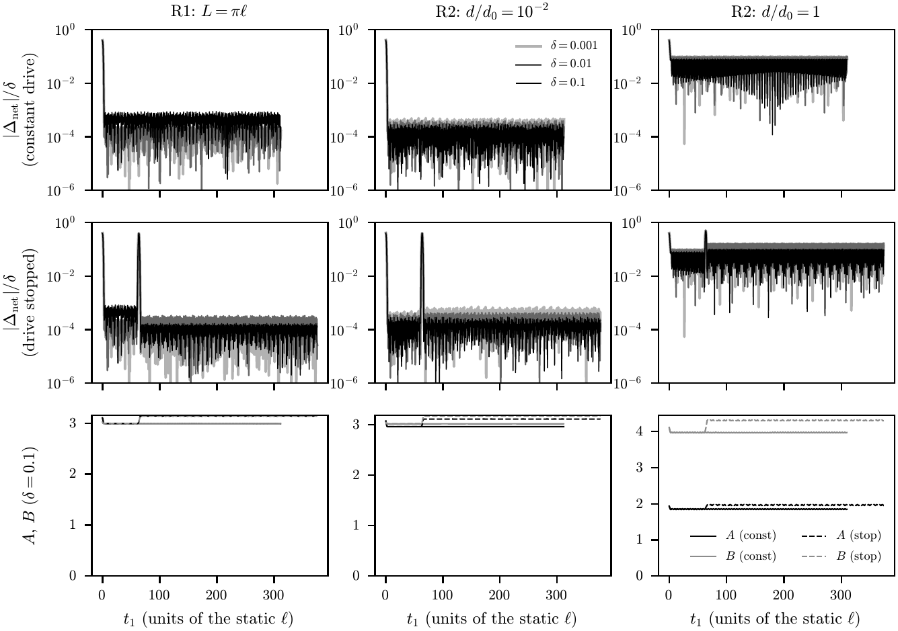
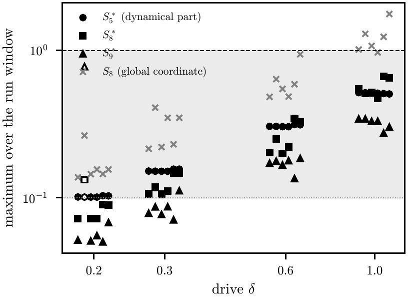

1A wormhole and two clocksワームホールと二つの時計
In Einstein's theory of gravity, a wormhole is a tunnel through space. It has two openings, called mouths. A signal can go from one mouth to the other in two ways: through the tunnel, called the throat, or through ordinary space, called the outside.
アインシュタインの重力の理論では、ワームホールは空間のトンネルです。トンネルには二つの出入り口があり、これを口と呼びます。信号は、一方の口からもう一方へ、二つの道で行けます。トンネルの中、つまりのどを通る道と、ふつうの空間、つまり外を通る道です。
To let a signal pass, something must hold the throat open. In the wormhole of this paper, quantum fields hold it open.
信号が通るには、何かがのどを開いたままにしなければなりません。この論文のワームホールでは、量子の場がのどを開いています。
Each mouth has its own clock. Suppose that one mouth sits deeper in a well of gravity than the other. Then its clock runs slower, and a time shift builds up between the two clocks. Physicists have discussed such a shift as a way to turn a wormhole into a time machine.
それぞれの口には、自分の時計があります。一方の口が、もう一方よりも重力の井戸の深い所にあるとします。するとその口の時計は遅れて進み、二つの時計の間に時間のずれがたまっていきます。こうしたずれは、ワームホールをタイムマシンに変える道として論じられてきました。
Whether quantum fields stop this has been argued for three decades. In 1991, Kim and Thorne studied a quantum field near the place where a wormhole time machine would form. In 1992, Hawking proposed the chronology protection conjecture: the idea that the laws of physics prevent time machines. More recent studies use other methods, for example holography (Section 9).
量子の場がこれを止めるかどうかは、30 年にわたって論じられてきました。1991 年、Kim と Thorne は、ワームホールのタイムマシンができる所の近くで、量子の場を調べました。1992 年、Hawking は時間順序保護予想を唱えました。物理の法則がタイムマシンを妨げる、という考えです。もっと新しい研究は、たとえばホログラフィーのような別の方法を使っています(9 節)。
The paper asks a narrow question. Take one model of a wormhole that quantum fields hold open. Push the clocks of its two mouths apart. What do the fields do? The paper does not ask whether time travel is possible.
論文は、狭い問いを立てます。量子の場が開いているワームホールのモデルを一つ取る。その二つの口の時計をずらす。場は何をするか。論文は、時間旅行ができるかどうかは問いません。
2The modelモデル
The paper uses a wormhole that Maldacena, Milekhin and Popov described in 2018. Two black holes with opposite magnetic charges are held at a distance d. The regions near them join into one throat.
論文は、Maldacena・Milekhin・Popov が 2018 年に示したワームホールを使います。逆向きの磁荷を持つ二つのブラックホールが、距離 d を置いて保たれています。その近くの領域がつながって、一つののどになります。
Charged particles of a kind called fermions move along the magnetic field lines. The field lines form loops: through the throat, and back through the outside. In a closed loop, quantum fields carry a small negative energy, called Casimir energy. In this wormhole, this energy holds the throat open. The number of fermions is q.
フェルミオンと呼ぶ種類の、電荷を持つ粒子が、磁力線に沿って動きます。磁力線は、のどを通って外を戻る輪になっています。閉じた輪の中では、量子の場が小さな負のエネルギーを持ちます。これをカシミールエネルギーと呼びます。このワームホールでは、このエネルギーがのどを開いています。フェルミオンの数は q です。
This wormhole is long: light takes more time through the throat than through the outside. Its authors describe it as a long wormhole that does not lead to violations of causality in the space outside.
このワームホールは長いのです。光は、外を通るよりも、のどを通る方が時間がかかります。元の著者たちは、これを、外の空間で因果律を破らない長いワームホールだと述べています。
The key point: the fields that hold this wormhole open are the same fields that feel a time shift between the mouths. So the paper asks what these fields do when such a shift is driven.
要の点は、このワームホールを開いている場が、口の間の時間のずれを感じる場と同じだということです。そこで論文は、そうしたずれを駆動したとき、これらの場が何をするかを問います。
To compute, the paper uses a simpler, two-dimensional description of this wormhole. The throat follows a simple theory of gravity in two dimensions (in the paper: Jackiw–Teitelboim gravity), at linear order. The paper uses two models of the loop of field lines, called R1 and R2, and R2 at two distances d. So there are three loops in all.
計算のために、論文はこのワームホールの、もっと簡単な 2 次元の記述を使います。のどは、2 次元の簡単な重力の理論(論文では Jackiw–Teitelboim 重力)に、1 次の近似で従います。磁力線の輪のモデルは R1 と R2 の二つで、R2 は二つの距離 d で使います。合わせて三つの輪です。
The drive δ makes the clock of mouth 1 run at e−δ times the rate of the clock of mouth 2. For example, with δ = 1, it runs at about 0.37 times the rate. The paper does not model how this difference is produced. The drive is switched on smoothly. In some runs, it is held for a time and then switched off again (the “stopped” drive).
駆動 δ は、口 1 の時計を、口 2 の時計の e−δ 倍の速さで進ませます。たとえば δ = 1 なら、約 0.37 倍です。この違いがどう生まれるかを、論文はモデルにしていません。駆動はなめらかに入れます。いくつかの計算では、しばらく保ってから、また切ります(「止めた」駆動)。
3Two margins二つのゆとり
How close does the model come to a time machine? The paper watches two margins. Both are built from the clocks of the mouths and of the outside. So they do not depend on how the points inside the throat are labelled.
モデルは、タイムマシンにどれだけ近づくのか。論文は、二つのゆとりを見張ります。どちらも、口の時計と外の時計から作るものです。そのため、のどの中の点にどう目盛りを付けるかにはよりません。
- Margin A: how much later light arrives at a mouth through the throat than through the outside, by the clocks of the mouths. A is the smaller value of the two directions.
- Margin B: the time that light needs to go once around the loop, through the throat and back outside. A time shift makes this time shorter in one direction and longer in the other. B is the shorter time.
- ゆとり A: 口の時計で測って、のどを通った光が、外を通った光よりどれだけ遅れて口に着くか。A は、二つの向きのうち小さい方の値です。
- ゆとり B: 光が、のどを通って外を戻り、輪をひと回りするのにかかる時間。時間のずれは、この時間を一方の向きでは短く、逆の向きでは長くします。B は短い方の時間です。
If A falls to zero or below, or if B goes to zero, a path of light could close on itself. The paper calls this the model's threshold for closed null curves. (A null curve is a path of light.)
A がゼロ以下になるか、B がゼロに近づくと、光の道が自分自身に閉じうるのです。論文は、これをモデルの閉じた光的曲線のしきいと呼びます(光的曲線とは、光の道のことです)。
In the slow limit of Section 4, if the throat did not respond, a constant drive would build up the time shift at a steady rate, 1 − e−δ, in the time of the outside. The question is what the fields do instead.
4 節のゆっくりの極限で、もしのどが応えなければ、一定の駆動は時間のずれを、外の時間で一定の速さ 1 − e−δ でためていきます。問いは、場が実際には何をするかです。
4How the fields push back場はどう押し返すか
First, the paper looks at a slow limit. In this limit, the state of the fields keeps up with each change. This makes the mechanism easy to see.
まず論文は、ゆっくりの極限を見ます。この極限では、場の状態が、変化の一つ一つについていきます。そのため、仕組みが見えやすくなります。
- With a time shift Δ, the fermions that go one way around the loop see a loop of length L − Δ. Those that go the other way see a loop of length L + Δ.
- So their Casimir energies are different. The difference is a steady flow of energy through the throat.
- The flow moves mass from one mouth to the other. At linear order, the total mass stays the same.
- A change in mass changes the clock rate of a mouth. This change works against the drive.
- 時間のずれ Δ があると、輪を一方の向きに回るフェルミオンには、輪の長さが L − Δ に見えます。逆の向きに回るものには、L + Δ に見えます。
- そのため、両者のカシミールエネルギーが違ってきます。その差が、のどを通る絶えないエネルギーの流れです。
- 流れは、一方の口からもう一方へ、質量を運びます。1 次の近似では、質量の合計は変わりません。
- 質量が変わると、口の時計の進み方が変わります。この変化は、駆動に逆らう向きにはたらきます。
Under a constant drive, there is exactly one point of balance. There, the time shift is zero, and the clock ratio of the throat, eδ, cancels the drive exactly.
一定の駆動のもとでは、釣り合いの点がちょうど一つあります。そこでは時間のずれはゼロで、のどの時計の比 eδ が、駆動をちょうど打ち消します。
5No settling落ち着かない
But the system does not settle at the point of balance. It swings around it, again and again. Compare a ball that rolls in a bowl without friction: it passes the bottom and does not stop there.
しかし、系は釣り合いの点に落ち着きません。点の周りを、何度も何度も揺れ動きます。摩擦の無いお椀の中を転がる玉と比べてみましょう。玉は底を通り過ぎ、そこで止まりません。
The reason is a symmetry. The slow equations do not change when time runs backward. Near the point of balance, their rates of change are purely imaginary numbers, which give a pure swing with no growth and no decay. For the computed drives (0.001, 0.01, 0.1 and 0.3), the paths that start from the static wormhole are closed.
理由は対称性です。ゆっくりの方程式は、時間を逆向きにしても変わりません。釣り合いの点の近くでは、変化の割合が純虚数になり、育ちも衰えもしない純粋な揺れになります。計算した駆動(0.001・0.01・0.1・0.3)では、止まったワームホールから出発する道は閉じています。
When the drive is switched off, the system moves on a closed path of the problem without a drive. It does not come back to the static wormhole, except when the drive is switched off at exactly the right moment.
駆動を切ると、系は駆動の無い問題の閉じた道の上を動きます。止まったワームホールには戻りません。ちょうどよい瞬間に駆動を切ったときだけは、例外です。
A caution注意
The slow limit needs slow changes. But the swing itself is not slow. For the loop R1, the swing turns through an angle of 4√6/3 (about 3.3 radians) in one loop time, and the limit needs this angle to be much smaller than 1. So the paper uses the slow limit only to find the mechanism. It does not claim the slow swing as a physical oscillation outside this limit.
ゆっくりの極限は、ゆっくりした変化を前提にします。しかし揺れ自体はゆっくりではありません。輪 R1 では、揺れは、光が輪を回る時間の間に 4√6/3(約 3.3 ラジアン)だけ進みます。極限が成り立つには、この角度が 1 よりずっと小さくなければなりません。そのため論文は、ゆっくりの極限を、仕組みを見つけるためだけに使います。この極限の外での物理的な揺れとしては、主張しません。
6With the travel time of light光の通る時間を入れると
Next, the paper adds the time that signals need to go around the loop. The state of the fields is now carried around the loop with this delay. The point of balance stays an exact solution.
次に論文は、信号が輪を回るのにかかる時間を入れます。場の状態は、この遅れとともに輪を運ばれます。釣り合いの点は、厳密な解のままです。
Do small disturbances grow or die away? To find out, the paper splits them into modes. Each mode has a number called a root. If a root lies off the vertical line in Figure 5, its mode grows or dies away.
小さな乱れは、育つのか、消えていくのか。それを知るために、論文は乱れをモードに分けます。それぞれのモードには、根と呼ぶ数があります。根が図 5 の縦の線から外れていれば、そのモードは育つか、消えていきます。
The paper counts the roots inside a region, in 12 cases: three loops, each with the drives 0, 0.001, 0.01 and 0.1. In each case, all 28 roots inside the region lie exactly on the line. Three of them come from the method itself. Exact checks show this, including interval arithmetic, a way of computing with guaranteed bounds. So no counted mode decays or grows.
論文は、ある範囲の中の根を、12 の場合について数えます。三つの輪のそれぞれに、駆動 0・0.001・0.01・0.1 です。どの場合も、範囲の中の 28 の根は全て、ちょうど線の上にあります。そのうち三つは、方法そのものから来るものです。これは、区間演算(誤差の範囲を保証して計算する方法)を含む厳密な確かめで示されます。つまり、数えたモードは、どれも衰えず、育ちもしません。
What becomes of the slow swing? The paper follows its root while it switches on the delays step by step. After the drive stops, the root arrives at a root whose pattern matches a boost: a change of viewpoint inside the throat. Under a constant drive in the loop R1, it arrives instead at a nearby root, which is not a boost. In a related theory (two-boundary Jackiw–Teitelboim gravity), changes of viewpoint of this kind are not physical. The paper has not shown this fully for its model. So it does not claim the slow swing as a physical mode.
ゆっくりの揺れはどうなるのか。論文は、遅れを少しずつ入れながら、その根を追います。駆動が止まった後、根は、ブースト、つまりのどの中での見方の変え方と同じ形の根に行き着きます。輪 R1 で一定の駆動のときは、代わりに近くの別の根に行き着き、これはブーストではありません。関連する理論(境界が二つの Jackiw–Teitelboim 重力)では、この種の見方の変え方は物理的ではありません。論文のモデルでは、これは十分には示されていません。そのため論文は、ゆっくりの揺れを物理的なモードだとは主張しません。
Then the paper runs the full equations: three loops, the drives 0.001, 0.01 and 0.1, and a constant or a stopped drive. That makes 18 runs, each on two grids.
次に論文は、完全な方程式を解きます。三つの輪、駆動 0.001・0.01・0.1、一定の駆動と止めた駆動です。合わせて 18 の計算で、それぞれを二つの格子で行います。
- Both margins, A and B, stay positive for 50 swings after the drive is switched on (constant drive) or off (stopped drive).
- The largest time shift is 0.4 to 0.5 times δ. It occurs while the drive is switched on or off.
- After the drive stops, the system does not return to the static wormhole. It keeps swinging. In the time shift, the remaining swing is (0.9–3.4) × 10−4 δ for R1, (3–7) × 10−4 δ for R2 at d/d0 = 10−2, and 0.10–0.17 δ for R2 at d/d0 = 1.
- 駆動を入れた後(一定の駆動)か切った後(止めた駆動)の 50 回の揺れの間、ゆとり A と B は、どちらも正のままです。
- 時間のずれの最大は、δ の 0.4〜0.5 倍です。駆動を入れるときか切るときに達します。
- 駆動が止まった後、系は止まったワームホールに戻りません。揺れ続けます。時間のずれに残る揺れは、R1 で (0.9〜3.4) × 10−4 δ、d/d0 = 10−2 の R2 で (3〜7) × 10−4 δ、d/d0 = 1 の R2 で 0.10〜0.17 δ です。
For the two smallest drives, this result says little about the push back. Even if the throat did not respond, the time shift would not reach the threshold in the same windows: for δ = 0.001, and for δ = 0.01 except under a constant drive in R2 at d/d0 = 1. The paper calls this a check, not a result.
いちばん小さい二つの駆動では、この結果は、押し返しについてあまり多くを語りません。のどが応えなくても、同じ区間では、時間のずれはしきいに届かないからです。δ = 0.001 では全て、δ = 0.01 では d/d0 = 1 の R2 で一定の駆動の場合を除いて、そうです。論文は、これを結果ではなく確かめと呼んでいます。
7Larger drives大きな駆動
Then the paper raises the drive to δ = 0.2, 0.3, 0.6 and 1. That makes 48 more runs. Each run lasts for the longer of 50 swings and two beat periods after the drive.
次に論文は、駆動を δ = 0.2・0.3・0.6・1 に上げます。さらに 48 の計算です。それぞれの計算は、駆動の後、50 回の揺れと、うなりの周期の 2 倍の、長い方だけ続けます。
- In the windows fixed in advance, A and B stay positive. Their smallest values are 1.16 and 2.03. So, within these runs, the model does not reach its threshold for closed null curves.
- The largest time shift is 0.099, 0.148, 0.277 and 0.421 for the four drives.
- All counted roots again lie on the line, so the swing continues.
- Two runs (loop R1, δ = 0.2, stopped drive) stopped early, at a numerical limit of the time steps. The paper says nothing about them after that point.
- 前もって決めた区間の中で、A と B は正のままです。最小の値は 1.16 と 2.03 です。つまり、これらの計算の中では、モデルは閉じた光的曲線のしきいに届きません。
- 時間のずれの最大は、四つの駆動で 0.099・0.148・0.277・0.421 です。
- 数えた根は、ここでも全て線の上にあり、揺れは続きます。
- 二つの計算(輪 R1、δ = 0.2、止めた駆動)は、時間の刻みの数値の限界で、早めに止まりました。その点から後について、論文は何も述べていません。
8Is the description still valid?記述はまだ成り立つか
A model like this is valid only while some ratios stay small. For example, the fluctuations of the throat must be small. Also, the change of the stress in the throat must be small compared with its static value. Before the computation, the paper fixes two lines: a ratio of 0.1 or less holds, and a ratio of 1 or more fails. Between them is the band. These lines are conventions, not physical thresholds.
こうしたモデルが成り立つのは、いくつかの比が小さいうちだけです。たとえば、のどのゆらぎは小さくなければなりません。のどの中の応力の変化も、止まっているときの値に比べて小さくなければなりません。計算の前に、論文は二つの線を決めます。比が 0.1 以下なら成り立ち、1 以上なら破れます。その間が帯です。この線は約束事で、物理的なしきい値ではありません。
Some ratios are fixed before any drive. They depend on the number of fermions q, the coupling g and the loop. Two of them are S2, for the quantum fluctuations of the throat, and S3, for the energy fluctuations inside it. Other ratios change during a run.
比のいくつかは、駆動の前から決まっています。フェルミオンの数 q、結合 g、輪によって決まります。そのうちの二つが、のどの量子ゆらぎの S2 と、のどの中のエネルギーのゆらぎの S3 です。ほかの比は、計算の間に変わります。
At δ = 1, the changing ratio S8 reaches 1 in five of the six combinations of loop and drive, before the margins fail. Taken alone, this would make δ = 1 “not decidable semiclassically” for every row of the verdict table.
δ = 1 では、変わる比 S8 が、輪と駆動の六つの組み合わせのうち五つで、ゆとりが尽きる前に 1 に達します。これだけを見れば、δ = 1 は、判定の表のどの行でも「半古典では決められない」となります。
But S8, and two other changing ratios, depend on how the points of the throat are labelled. A boost, a change of viewpoint, changes them. So the paper builds three new ratios, S5*, S8* and S9*, from what each mouth measures with its own clock. A boost does not change them. For mouths at rest, they are equal to the old ratios.
しかし S8 と、ほかの二つの変わる比は、のどの点にどう目盛りを付けるかによります。見方の変え方であるブーストで、値が変わります。そこで論文は、それぞれの口が自分の時計で測る量から、三つの新しい比 S5*・S8*・S9* を作ります。ブーストでは、これらは変わりません。口が止まっているときは、もとの比と同じ値になります。
With the new ratios, no value reaches 1 at any of the four larger drives. At δ = 1, the largest values are 0.517, 0.666 and 0.343. In the same windows, the old S8 reaches 0.97 to 1.77.
新しい比では、四つの大きな駆動のどれでも、1 に達する値はありません。δ = 1 での最大は、0.517・0.666・0.343 です。同じ区間で、もとの S8 は 0.97〜1.77 に達します。
The verdicts are in Figure 8. For the constant drives 0.001, 0.01 and 0.1, the changing ratios stay below 0.1, so the fixed ratios decide:
判定は図 8 にあります。一定の駆動 0.001・0.01・0.1 では、変わる比は 0.1 より下に留まるので、固定した比が判定を決めます。
- bounded oscillation where all ratios are small;
- not decidable semiclassically where a fixed ratio is 1 or more;
- undecided within the band where the largest fixed ratio is between 0.1 and 1 (7 of the 42 rows).
- 全ての比が小さければ、有界な揺れ。
- 固定した比が 1 以上なら、半古典では決められない。
- 固定した比の最大が 0.1 と 1 の間なら、帯の中で未決(42 行のうち 7 行)。
At the larger drives, with the new ratios, 27 rows are undecided within the band. The other 15 are not decidable semiclassically, because S2 or S3 is 1 or more. In neither group does a row reach the verdicts “stops (self-correction)”, “stops (destruction)” or “does not stop”. So, with the new ratios, a value of 1 comes only from the fixed ratios S2 and S3, which are set by q and g.
大きな駆動では、新しい比を使うと、27 行が帯の中で未決です。残りの 15 行は、S2 か S3 が 1 以上なので、半古典では決められません。どちらの組でも、「止まる(自己修正)」「止まる(破壊)」「止まらない」の判定に届いた行はありません。つまり新しい比を使うと、1 に達するのは、q と g で決まる固定した比 S2 と S3 だけです。
A narrow margin: at δ = 0.2, 20 of the 27 band rows are in the band only because the largest S5* exceeds 0.1 by 1.0 to 3.2 per cent. The paper does not say where, between δ = 0.1 and 0.2, bounded oscillation turns into undecided within the band. It leaves open a small check of this edge, with its plan and criteria fixed in advance. Also, the new ratios are one construction that does not depend on the viewpoint. The paper does not claim that they are the only correct criterion.
わずかな差について: δ = 0.2 では、帯の 27 行のうち 20 行は、S5* の最大が 0.1 を 1.0〜3.2 % 超えることだけで帯に入っています。δ = 0.1 と 0.2 の間のどこで、有界な揺れが帯の中の未決に変わるのかを、論文は述べていません。計画と基準を前もって決めた、この境の小さな確かめを、開いたまま残しています。また、新しい比は、見方によらない作り方の一つです。唯一の正しい基準だとは、論文は主張しません。
9How this relates to other workほかの研究との関係
The paper lists what the works it cites compute, within the range that it checked. It does not claim novelty.
論文は、引いた研究が何を計算しているかを、確かめた範囲で並べています。新しさは主張しません。
- Maldacena, Milekhin and Popov (2018) treat static wormholes that are the same at both mouths. Their text does not discuss time machines.
- Two other works treat a constant time shift in the throat's time as a parameter of static solutions. Neither computes the response to the shift.
- Emparan and Tomašević (2021) studied wormhole time machines with holography, on a fixed background. Another paper of theirs included backreaction in three dimensions. Tomašević (2023) argued that traversable wormholes cannot become time machines without effects of quantum gravity, and expects the wormhole to correct itself once backreaction is included.
- The paper does not read the conclusions of these works as its own, or its own as theirs.
- Some older papers have no legal free version, including Hawking's paper of 1992. The paper did not read them, and says so.
- Maldacena・Milekhin・Popov(2018)は、二つの口で同じ形の、止まったワームホールを扱います。その本文は、タイムマシンを論じていません。
- ほかの二つの研究は、のどの時間の一定のずれを、止まった解のパラメータとして扱います。どちらも、ずれへの応答は計算していません。
- Emparan と Tomašević(2021)は、固定した背景の上で、ホログラフィーを使ってワームホールのタイムマシンを調べました。二人の別の論文は、3 次元で反作用を入れました。Tomašević(2023)は、量子重力の効果に頼らなければ、通り抜けられるワームホールはタイムマシンにならないと論じ、反作用を入れればワームホールは自ら修正されると見込んでいます。
- 論文は、これらの研究の結論を自分の結論として読まず、自分の結論をそれらのものとしても読みません。
- 古い論文のいくつかには、合法な無料の版がありません。1992 年の Hawking の論文もその一つです。論文はそれらを読んでおらず、そのことを書いています。
10What the paper does not claim論文が主張しないこと
- The paper makes no statement on whether time travel is possible, whether the chronology protection conjecture holds, consequences of quantum gravity, values on the chronology horizon itself, or other wormholes, fields or states.
- All statements hold in the two-dimensional effective model, with the throat at linear order, and for the computed loops, drives and run windows. Higher orders, the integral over the magnetic field lines, radiation from the mouths and induced currents are not included.
- These excluded effects, radiation from the mouths and induced currents in particular, could take energy away from the swing. The lack of damping is a property of the closed model. The paper has not estimated a damping time.
- The slow limit serves only to find the mechanism. The slow swing is not claimed as a physical mode.
- The lack of damping refers to the counted linear modes and to the run windows. In longer windows, the sign of the slow change in the size of the swing is not determined. All runs that stopped at the numerical limit are R1 runs. The paper has not shown with another method whether the long-time behavior of R1 is resolved.
- The new ratios are one construction, not the unique or correct criterion. The lines 0.1 and 1 are conventions. At the four larger drives, most verdicts read “undecided within the band”.
- The paper has not examined which loop model is closer to the field lines of the original wormhole. At the constant drives, ten of the 14 combinations of g and q are undecidable only because R1 and R2 give different verdicts.
- The paper does not model how the drive is produced.
- 時間旅行ができるかどうか、時間順序保護予想が正しいかどうか、量子重力からの帰結、時間順序の地平そのものでの値、ほかのワームホール・場・状態について、論文は何も述べていません。
- 言明は全て、2 次元の有効なモデルの中で、のどは 1 次の近似、計算した輪・駆動・計算の区間についてのものです。高次の項、磁力線についての積分、口からの放射、誘導される電流は入っていません。
- これらの外した効果、とくに口からの放射と誘導される電流は、揺れからエネルギーを奪うかもしれません。揺れが衰えないのは、閉じたモデルの性質です。論文は、衰えるまでの時間を見積もっていません。
- ゆっくりの極限は、仕組みを見つけるためだけのものです。ゆっくりの揺れを物理的なモードだとは主張しません。
- 揺れが衰えないというのは、数えた線形のモードと、計算の区間についてです。もっと長い区間では、揺れの大きさのゆるやかな変化の符号は決まっていません。数値の限界で止まった計算は、全て R1 のものです。R1 の長い時間の振る舞いが解けているかを、論文は別の方法では示していません。
- 新しい比は、作り方の一つで、唯一の、あるいは正しい基準ではありません。0.1 と 1 の線は約束事です。四つの大きな駆動では、ほとんどの判定が「帯の中で未決」です。
- どちらの輪のモデルが、元のワームホールの磁力線に近いかを、論文は調べていません。一定の駆動では、g と q の 14 の組み合わせのうち 10 が、R1 と R2 の判定が違うことだけで、決められないものになっています。
- 駆動がどう生まれるかを、論文はモデルにしていません。
11How the work was checked仕事の確かめ方
- Before each stage of the computation, its criteria were written in one document and frozen. The checksum (sha256) of the document was recorded first. The paper lists the changes made after results were seen, with their reasons where the record gives one.
- Each result was accepted only after a review by a fresh AI session that shared no context with the writing sessions: eight rounds for the results, and three rounds for the manuscript. The writer and the reviewers were the same AI model. The last corrections (version 1.0) did not go through a further review round. The advising AI session and the author checked them.
- The roots were counted with exact methods: the argument principle, symmetries, and interval arithmetic. Each stage can be run again with one command.
- The Zenodo record holds the paper, the code, the outputs, the records and the review findings.
- Human check: the author read the abstract and looked through the whole PDF, and checked that the figures display correctly. The author did not check the derivations, the code, the numerical results, the references, or the text other than the abstract.
- 計算の各段の前に、その基準を一つの文書に書いて凍結しました。文書のチェックサム(sha256)を先に記録しました。結果を見た後で変えたことは、記録に理由があればその理由とともに、論文に並べてあります。
- 結果はそれぞれ、書いたセッションと文脈を共有しない、新しい AI のセッションの審査を経てから受け入れました。結果の審査が 8 巡、原稿の審査が 3 巡です。書き手と審査役は、同じ AI モデルです。最後の直し(第 1.0 版)は、さらなる審査の巡を経ていません。助言役の AI のセッションと著者が確かめました。
- 根は、偏角の原理・対称性・区間演算という厳密な方法で数えました。各段は、一つのコマンドで走らせ直せます。
- Zenodo の記録には、論文・コード・出力・記録・審査の所見が入っています。
- 人の確かめ: 著者は要旨を読み、PDF の全体に目を通して、図が正しく表示されていることを確かめました。著者は、導出・コード・数値の結果・参考文献・要旨以外の本文は確かめていません。
12Two figures from the paper論文の図を二つ
Show the paper's Figures 2 and 3 (in English, as in the paper)論文の図 2 と図 3 を見る(論文のとおり英語)


13Words used in this guideこのページの言葉
- Wormhole
- In Einstein's theory of gravity, a tunnel through space with two openings.
- Mouth, throat, outside
- The two openings of the wormhole; the tunnel between them; and ordinary space between the mouths.
- Drive δ
- The difference in clock rates between the mouths. The clock of mouth 1 runs at e−δ times the rate of mouth 2.
- Time shift Δ
- The shift that builds up between the clocks of the two mouths.
- Margins A and B
- A: how much later light arrives through the throat than through the outside. B: the shorter of the two times for light to go once around the loop.
- Closed null curve
- A path of light that closes on itself. The model's threshold: A ≤ 0 or B → 0.
- Fermion
- A kind of particle of matter. Electrons are one example. In the model, q charged fermions move along the magnetic field lines.
- Casimir energy
- A small energy that quantum fields carry in a closed space, here negative. In this wormhole, it holds the throat open.
- Loop models R1 and R2
- Two models of the loop that the field lines make through the throat and back outside.
- Slow limit
- A limit in which the state of the fields keeps up with each change (in the paper: quasi-static).
- Mode and root
- A small disturbance splits into modes. Each mode has a number, its root, which tells whether the mode grows, dies away, or only swings.
- Interval arithmetic
- A way of computing that gives guaranteed bounds for each number.
- Boost
- A change of viewpoint inside the throat (in the paper: an SL(2) or AdS2 boost).
- Ratios S2, S3, S8; S5*, S8*, S9*
- Numbers that must stay small for the description to hold. S2 and S3 are fixed before any drive. The starred ratios do not change under a boost.
- Band
- Ratios between 0.1 and 1. The lines 0.1 and 1 are conventions fixed before the computation.
- Bounded oscillation
- The verdict when the swing continues, all ratios are 0.1 or less, and A and B stay positive.
- Undecided within the band
- The verdict when some ratio lies between 0.1 and 1.
- Not decidable semiclassically
- The verdict when some ratio reaches 1 before A ≤ 0 or B → 0.
- Coupling g
- The coupling constant of the charged fields in the model. The paper uses g = 0.3 and 1.
- Chronology protection conjecture
- The idea, proposed by Hawking, that the laws of physics prevent time machines.
- ワームホール
- アインシュタインの重力の理論で、二つの出入り口を持つ空間のトンネル。
- 口・のど・外
- ワームホールの二つの出入り口。その間のトンネル。口の間のふつうの空間。
- 駆動 δ
- 口の間の、時計の進み方の違い。口 1 の時計は、口 2 の e−δ 倍の速さで進みます。
- 時間のずれ Δ
- 二つの口の時計の間にたまっていくずれ。
- ゆとり A と B
- A: のどを通った光が、外を通った光よりどれだけ遅れて着くか。B: 光が輪をひと回りする二つの時間のうち、短い方。
- 閉じた光的曲線
- 自分自身に閉じる光の道。モデルのしきいは、A ≤ 0 か B → 0。
- フェルミオン
- 物質の粒子の一種。電子はその一例です。モデルでは、q 個の電荷を持つフェルミオンが磁力線に沿って動きます。
- カシミールエネルギー
- 閉じた空間で量子の場が持つ小さなエネルギー。ここでは負。このワームホールでは、これがのどを開いています。
- 輪のモデル R1 と R2
- 磁力線が、のどを通って外を戻る輪の、二つのモデル。
- ゆっくりの極限
- 場の状態が、変化の一つ一つについていく極限(論文では準静的)。
- モードと根
- 小さな乱れはモードに分かれます。それぞれのモードの数、根が、モードが育つか、消えていくか、揺れるだけかを示します。
- 区間演算
- 一つ一つの数に、保証された範囲を付けて計算する方法。
- ブースト
- のどの中での見方の変え方(論文では SL(2) または AdS2 のブースト)。
- 比 S2・S3・S8、S5*・S8*・S9*
- 記述が成り立つために小さくなければならない数。S2 と S3 は駆動の前から決まっています。* の付いた比は、ブーストで変わりません。
- 帯
- 0.1 と 1 の間の比。0.1 と 1 の線は、計算の前に決めた約束事です。
- 有界な揺れ
- 揺れが続き、全ての比が 0.1 以下で、A と B が正のままのときの判定。
- 帯の中で未決
- ある比が 0.1 と 1 の間にあるときの判定。
- 半古典では決められない
- A ≤ 0 か B → 0 になる前に、ある比が 1 に達したときの判定。
- 結合 g
- モデルの中の、電荷を持つ場の結合定数。論文は g = 0.3 と 1 を使います。
- 時間順序保護予想
- 物理の法則がタイムマシンを妨げる、という Hawking が唱えた考え。
14Read the paper論文を読む
Maeda, Y. (2026). Response of a quantum-supported traversable wormhole to a driven time shift between its mouths (Version 1.0). Zenodo. https://doi.org/10.5281/zenodo.23917339
The Zenodo record holds the paper (PDF) and an archive with the code, the outputs, the records and the review findings. The paper is in English and is under the CC BY 4.0 license. The LICENSE file of the archive lists the exceptions.
Zenodo の記録には、論文(PDF)と、コード・出力・記録・審査の所見をまとめた保管が入っています。論文は英語で、ライセンスは CC BY 4.0 です。例外は、保管の LICENSE のファイルにあります。
15About this pageこのページについて
This page and its video explain the paper for a general audience. They use only the paper's own results. If this page and the paper differ, the paper is correct. The wormholes, clocks, paths and roots in Figures 1 to 5 and in the video are drawings, not computed values. The numbers in Figures 6 to 8 come from the paper. The Japanese version is a translation of the English version.
このページと動画は、一般の方に向けて論文を解説するものです。使っているのは論文自身の結果だけです。このページと論文が違うときは、論文が正しいです。図 1〜5 と動画のワームホール・時計・道・根は描いたもので、計算した値ではありません。図 6〜8 の数は論文のものです。日本語版は、英語版の翻訳です。
Made with AI. Claude, an AI model by Anthropic, wrote the text, the figures, the video script, the animation code, and this page, at the request of the paper's author.
AI で作りました。文章・図・動画の台本・アニメーションのコード・このページは、論文の著者の依頼で、Anthropic の AI モデル Claude が書きました。
The paper also states its own use of AI. The computations, code, derivations, internal reports and the text of the paper were produced by Claude Code (Anthropic). The work followed a research constitution and a project charter, which an advising AI session (also Claude) drafted and the author approved. The author's decisions are logged with dates. The paper marks the 37 entries in which the author or the advising session touched the direction of a mathematical or physical statement. Fresh sessions of the same AI model did the reviews (see Section 11).
論文も、AI の使い方を自ら書いています。計算・コード・導出・内部の報告・論文の本文は、Claude Code(Anthropic)が作りました。仕事は、研究の憲法と作の交付文書に従いました。これらは助言役の AI のセッション(これも Claude)が起草し、著者が承認したものです。著者の判断は、日付とともに記録されています。著者か助言役のセッションが、数学や物理の言明の方向に触れた 37 の記録には、印が付いています。審査は、同じ AI モデルの新しいセッションが行いました(11 節)。
Video. The animation uses Manim Community Edition. The voice is synthetic: Kokoro-82M (Apache License 2.0), run with kokoro-onnx. The video font is Computer Modern (CMU Serif).
動画。アニメーションは Manim Community Edition で作りました。声は合成音声で、Kokoro-82M(Apache License 2.0)を kokoro-onnx で動かしました。動画の文字は Computer Modern(CMU Serif)です。
License. The text, figures, and video of this page are available under CC BY 4.0. The two figures in Section 12 are from the paper, also under CC BY 4.0.
ライセンス。このページの文章・図・動画は、CC BY 4.0 で使えます。12 節の二つの図は論文のもので、これも CC BY 4.0 です。